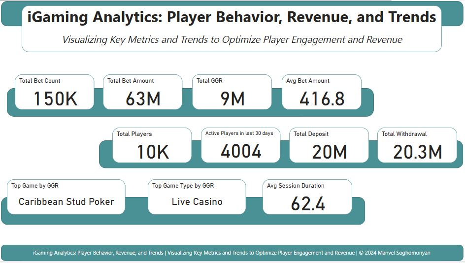
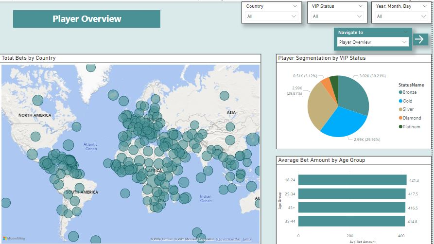
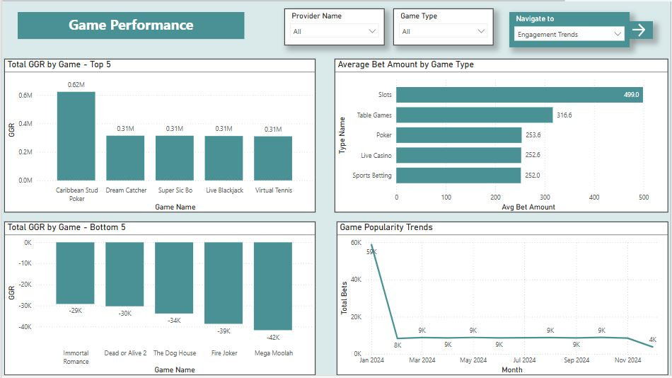
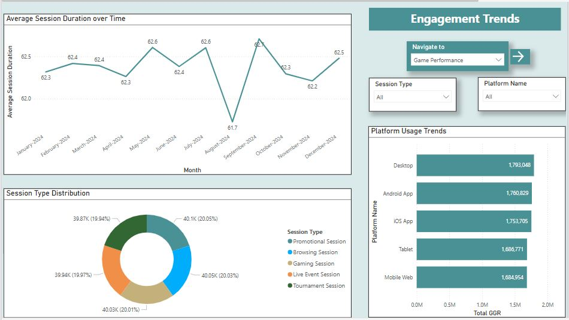
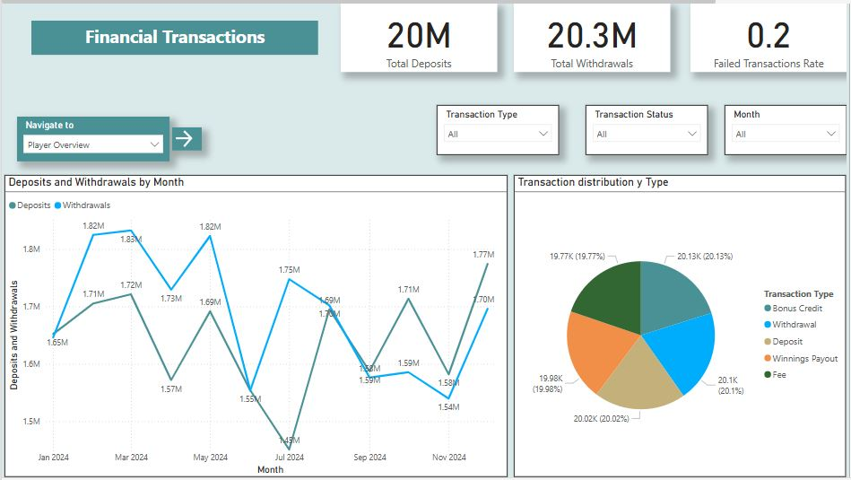
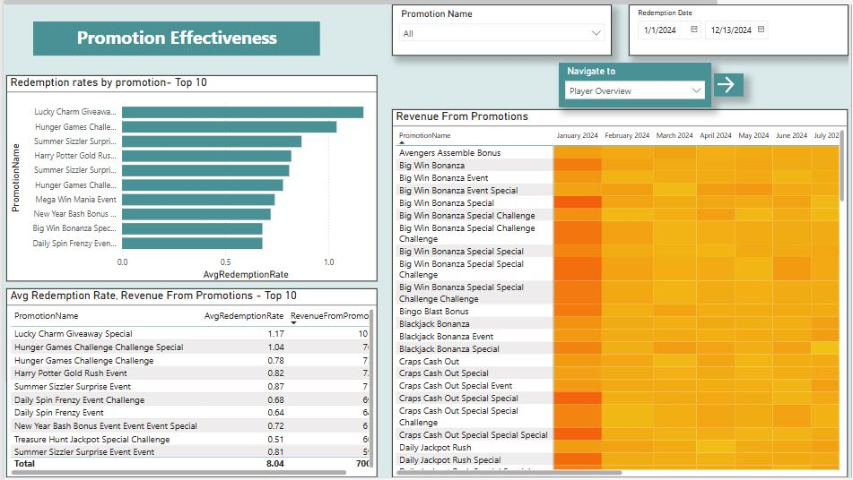
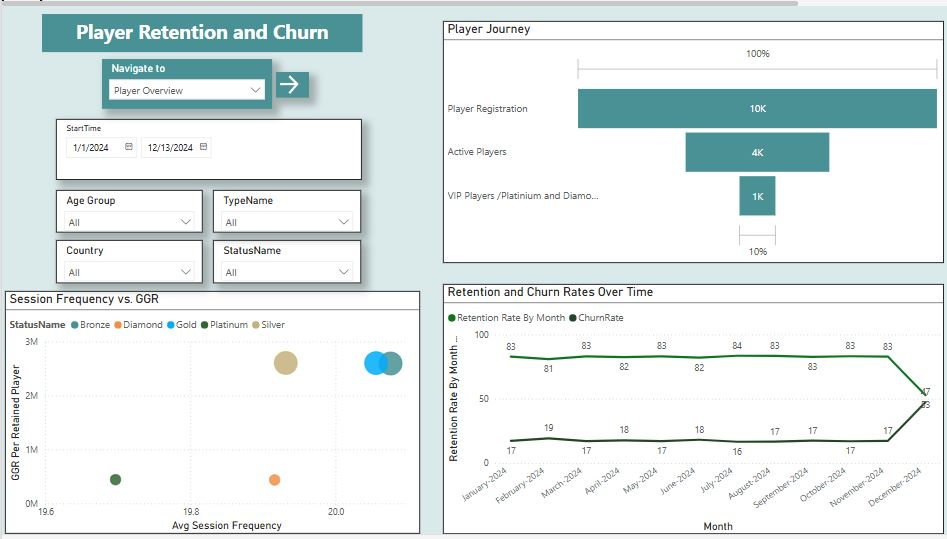
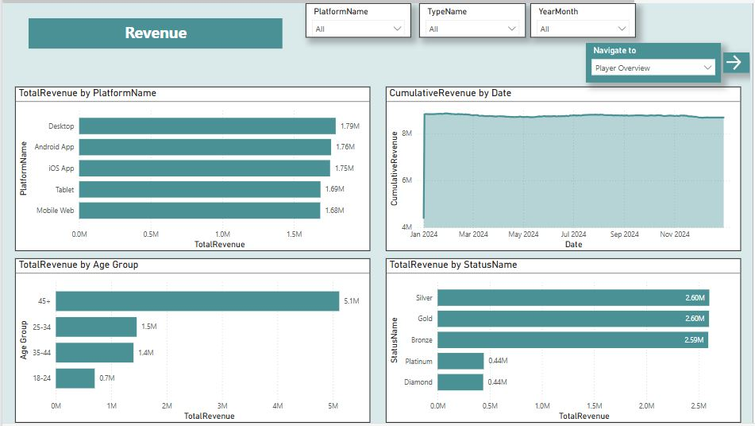
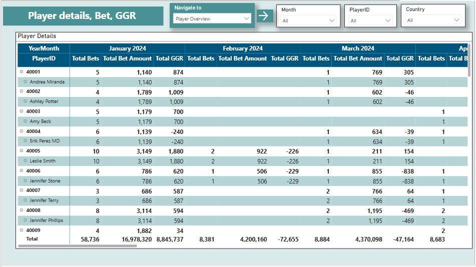

iGaming Analytics: Player Behavior, Revenue, and Trends
Project Overview
This project showcases a comprehensive data analytics
solution built for the iGaming (online gaming) industry.
The objective was to analyze player behavior, track
revenue, and identify trends in online gaming through
the use of advanced SQL querying and interactive data
visualization in Power BI. The project is designed to
offer insights into key aspects of player behavior,
betting patterns, revenue generation, and trends,
enabling data-driven decision-making for iGaming
platforms.
Project Goals
-
Analyze Player Behavior: Gain
insights into players' activities, including their
frequency of play, bet amounts, wins, and engagement
with promotions.
-
Revenue Insights: Track revenue
streams based on bet amounts, wins, and player
engagement. The analysis aims to identify patterns
in profitability, including player segments that
contribute significantly to revenue.
-
Trend Analysis: Identify trends in
player activity, revenue over time, and game
preferences. Visualize seasonal or cyclical patterns
in player engagement.
Data Model
-
Players: Stores information about
players including their demographics, VIP status,
and account status.
-
Bets: Contains data about each bet
placed by players, including bet amounts, win
amounts, and associated games.
-
Games: Describes the games
available on the platform, such as Blackjack, Poker,
and Roulette.
-
Transactions: Tracks financial
transactions such as deposits, withdrawals, and
winnings payouts.
-
Promotions: Details promotions and
rewards available to players, including start and
end dates, and redemption behavior.
-
Sessions: Tracks player sessions on
games and their duration.
-
Game Providers and Types:
Information on the game providers and types used on
the platform.
Tools and Technologies
-
SQL Server: Used to create the
relational database, store the data, and perform
advanced data analytics with SQL queries.
-
Power BI: Leveraged to create
interactive dashboards and visualizations that
display key performance metrics such as player
behavior, revenue, trends, and more.
-
Python: Used for generating
synthetic data for the project, simulating realistic
player and transaction behaviors.
Data Preparation
1.Database Design:
-
Designed the database schema for the iGaming
platform, ensuring it reflects the various entities
and their relationships.
-
Populated the database with realistic data to
simulate real-world scenarios, including generating
10,000 player records, 100,000 bets, 200,000
transactions, and more.
2.SQL Analytics:
-
Conducted exploratory data analysis (EDA) using SQL
queries to gain insights into player behavior, such
as bet amounts, win amounts, and player frequency.
-
Created detailed reports that show the relationships
between player activity, revenue generation, and
session behavior.
3.Key Metrics:
-
Total revenue and profit across all players and
games.
-
Player segmentation (high-volume bettors vs regular
players)
- Engagement with promotions.
- Win/Loss ratios by game type.
SQL Queries and Insights
Power BI Report
The Power BI report, titled "iGaming Analytics: Player
Behavior, Revenue, and Trends", is designed to provide a
comprehensive and interactive dashboard that presents
the following insights:








